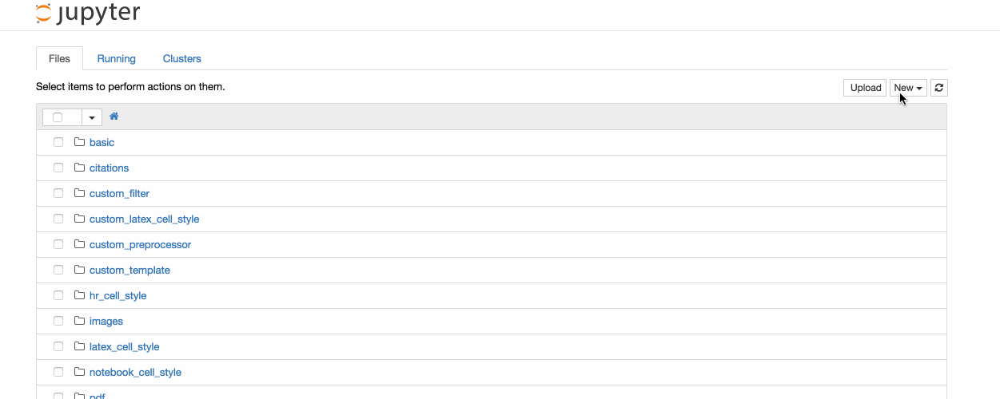

Jupyterノートブック¶
はじめに¶
ノートブックは、対話型コンピューティングへのコンソールベースのアプローチを定性的に新しい方向に拡張し、計算プロセス全体をキャプチャするのに適したWebベースのアプリケーションを提供します:結果をコミュニケーションするように、コードの開発、文書化、実行が出来ます。Jupyter Notebookは2つのコンポーネントを組み合わせています:
Webアプリケーション: 説明文、数学、計算、リッチメディアの出力を組み合わせた対話的なオーサリング用のブラウザベースのツールです。
ノートブックドキュメント: 説明文、数学、画像およびリッチメディアのオブジェクト表現の入力と出力を含む、Webアプリケーションで表示可能なすべてのコンテンツ表現です。
参考
ノートブックとその依存関係のインストール方法については、 installation guide を参照して下さい。
Webアプリケーションの主な機能¶
- 自動シンタックスハイライト、インデント、タブの保管とイントロスペクションによるコードのブラウザ内編集。
- ブラウザからコードを実行し、生成したコードに計算結果を添付する機能。
- HTML、LaTeX、PNG、SVGなどのリッチメディア表現を使用した計算結果の表示。例えば、matplotlib ライブラリによってレンダリングされたPublication-quality figureをインラインに含めることが出来ます。
- コードの解説を提供できる Markdown マークアップ言語を使用したリッチテキストのブラウザ内編集は、プレーンテキストに限らずコードの解説を提供します。
- LaTeXを使用してマークダウンセル内に簡単に数式表記を含めることができ、MathJax によってネイティブにレンダリングされます。
ノートブックドキュメント¶
ノートブックドキュメントには、インタラクティブ・セッションのインプットとアウトプットと、コードに付随する実行用ではない追加のテキストが含まれています。このようにして、Notebookファイルは、セッションの完全な計算記録として機能し、実行可能なコードを説明文、数学、および結果として生じるオブジェクトのリッチ表現とインタリーブすることができます。これらのドキュメントは内部的に JSON ファイルで、.ipynb 拡張子で保存されます。JSONはプレーンテキスト形式なので、バージョン管理や同僚との共有が可能です。
ノートブックは、nbconvert コマンドを使用して、HTML（ブログ投稿など）、reStructuredText、LaTeX、PDF、およびスライドショーなど、さまざまな静的フォーマットにエクスポートできます。
さらに、パブリックなURLから入手可能な .ipynb のノートブックドキュメントは、Jupyter Notebook Viewer (nbviewer)を介して共有することが出来ます。このサービスは、ノートブックドキュメントをURLからロードし、静的なWebページとしてレンダリングします。その結果は同僚や、Jupyterノートブック自体をインストールする必要なく他のユーザーにパブリックなブログ投稿として共有できます。つまり、nbviewer は単にWebサービスとしてに nbconvert するだけなので、nbviewerに依存することなく、nbconvertで独自の静的変換を行うことができます。
ノートブックサーバーの起動¶
次のコマンドを使ってコマンドラインからノートブックサーバーを起動することが出来ます:
jupyter notebook
これにより、ノートブックサーバに関する情報がコンソールに表示され、WEBブラウザが開き、WEBアプリケーションのURLが開きます(デフォルトは http://127.0.0.1:8888)。
Jupyterノートブック Webアプリケーションのランディングページである dashboard には、ノートブックディレクトリで現在利用可能なノートブックが表示されます(デフォルトでは、ノートブックサーバーが起動されたディレクトリ)。
New Notebook ボタンでダッシュボードから新しいノートブックを作成したり、既存のノートブックを開くことが出来ます。ノートブックリストのエリアに .ipyng のノートブックや標準の .py のPythonソースコードをドラッグアンドドロップすることも出来ます。
コマンドラインからノートブックサーバーを起動する時、jupyter notebook my_notebook.ipynb でダッシュボードをバイパスして、特定のノートブックを直接開くことが出来ます。拡張子がない場合、 .ipynb 拡張子が仮定されます。
開いてるノートブックの中にいるとき、File | Open… メニューオプションは新しいブラウザータブにダッシュボードを開き、ノートブックディレクトリから別のノートブックを開くか、新しいノートブックを作成します。
注釈
異なるディレクトリのノートブックで作業したい場合、同時にノートブックサーバーを起動することが出来ます。デフォルトでは、最初のノートブックサーバーは8888ポートで起動し、後のノートブックサーバーはそれに近いポートを検索します。—port オプションを使用してポートを手動で指定することも出来ます。
新しいノートブックドキュメントの作成¶
新しいノートブックはダッシュボードから、またはアクティブなノートブック内のFile‣Newメニューオプションを使っていつでも作成できます。新しいノートブックは同じディレクトリ内に作成され、新しいブラウザタブで開きます。また、ダッシュボードのノートブックリストに新しいエントリとして反映されます。
ノートブックを開く¶
開いているノートブックにはカーネルに接続された 正確なひとつ のインタラクティブなセッションがあり、ユーザーが送信したコードを実行して結果を返信します。このカーネルはWebブラウザウィンドウが閉じている場合はアクティブなままで、ダッシュボードから同じダッシュボードを開くとWebアプリケーションは同じカーネルに接続されます。ダッシュボードでは、アクティブなカーネルのノートブックには Shutdown ボタンがありますが、非アクティブなカーネルのノートブックの場合は Delete ボタンがあります。
他のクライアントが同じカーネルに接続する可能性があります。各カーネルが起動すると、ノートブックサーバーは次のようなメッセージをターミナルに出力します:
[NotebookApp] Kernel started: 87f7d2c0-13e3-43df-8bb8-1bd37aaf3373
この長い文字列はカーネルに接続するのに必要な情報を得るために十分なカーネルのIDです。ノートブックがIPythonカーネルを使用している場合、 %connect_info magic を実行することでこの接続データをみることも出来ます。同じID情報と他の詳細を表示します。
例えば、コマンドラインから 同じ カーネルに接続されたQt consoleを手動で起動したり、IDの一部を渡したりすることが出来ます:
$ jupyter qtconsole --existing 87f7d2c0
IDなしの場合、 —existing は直前に起動したカーネルに接続します。
IPythonカーネルでは、ノートブックの %qtconsole magic を実行して、同じカーネルに接続されたQtコンソールを開くことも出来ます。
ノートブックのユーザーインターフェース¶
新しいノートブック文章を作成する時、 ノートブック名 、メニューバー 、ツールバー 、空の コードセル が表示されます。
ノートブック名: ノートブック文書の名前は、ページ上部、IP[y]: Notebook 横に表示されます。この名前は .ipynb ノートブック文書ファイルの名前に反映されます。ノートブック名をクリックすると名前を変更できるダイアログが表示されます。このようにブラウザで ”Untitled0” から “My first notebook” に変更すると、Untitled0.ipynb ファイルは My first notebook.ipynb に変更されます。
メニューバー: メニューバーには、ノートブックの機能を操作することが出来る様々なオプションが表示されます。
ツールバー: ツールバーはアイコンをクリックすることで、ノートブック内で頻繁に使用される操作を簡単に実行できます。
code cell: the default type of cell, read on for an explanation of cells
注釈
ノートブクバージョン4.1ではユーザーインターフェースにより複数のセルを選択することができます。メニューバーにある、 quick celltype selector は、選択範囲内のセルのタイプが一位ではないことを示すために複数のセルが選択されている場合にダッシュ - を表示します。クイックセレクタを使用して選択のタイプを変更し、現在選択されている全てのセルのタイプを変更することも出来ます。
ノートブック文書の構造¶
ノートブックは一連のセルで構成されています。セルは複数行のテキスト入力フィールドで、その内容は Shift-Enter で実行するか、ツールバーの’’Play’’ ボタン、またはメニューバーの Cell | Run をクリックして実行します。セルの実行動作はセルのタイプによって決まります。セルには、 code cells、markdown cells、raw cells の3種類があります。すべてのセルは code cells から始まりますが、そのタイプはツールバーのドロップダウン(最初は ‘’Code’’)、または keyboard shortcuts を使用して変更できます。
ノートブックで出来ることのさまざまな情報については、collection of examples を参照して下さい。
コードセル¶
コードセル を使用すると、完全な構文ハイライト表示とタブ補完で新しいコードを編集と書き込みができます。デフォルトでは、コードセルに関連付けれた言語はPythonですが、 Julia や R のような他の言語は cell magic commands を使って処理できます。
コードセルが実行されると、それに含まれるコードがノートブックに関連付けられたカーネルに送られます。この計算から返された結果は、セルの 出力 としてノートブックに表示されます。出力はテキストに限定されず、 matplitlib の図やHTMLテーブル(例えば、 pandas データ解析パッケージで使われるもの)を含む他の多くの出力形式も可能です。これはIPythonの リッチ表示 の機能として知られています。
参考
リッチ出力 のサンプルノートブック
マークダウンセル¶
リッチテキスト を使用して、説明的なテキストとコードを交互に使用して、文法的に計算プロセスを文書化することが出来ます。IPythonでは、これはマークダウン言語でテキストをマークアップすることで実現されます。対応するセルは マークダウンセル と呼ばれます。マークダウン言語はこのテキストマークアップを実行するシンプルな方法を提供します。つまり、強調するテキストの部分(イタリック体)、太字、フォームリストなどを指定することが出来ます。
ドキュメントの構造を提供する場合は、マークダウンの見出しを使用できます。マークダウンの見出しは、1〜6個のハッシュ # 記号 # と、スペースとセクションのタイトルで構成されます。マークダウンの見出しは、ノートブックのセクションのクリック可能なリンクに変換されます。また、PDFなどの他のドキュメント形式にエクスポートする際のヒントとしても使用されます。
マークダウンセルが実行されると、マークダウンコードは対応するフォーマットされたリッチテキストに変換されます。マークダウンは書式設定に任意のHTMLコードを使用できます。
マークダウンセル内では、標準のLaTex表記を使って、簡単な方法で 数学 を含めることも出来ます: インライン数学では $…$、表示された数学では $$…$$ です。マークダウンセグが実行されると、LaTeXの部分は高品質のタイポグラフィの式としてHTM出力に自動的にレンダリングされます。これはLaTeX機能の large subset をサポートする MathJax によって可能になりました。
\begin{equation}…\end{equation}、 \begin{align}…\end{align} のようなLaTeXtoAMS-LaTeX(amsmathパッケージ)で定義されている標準の数学環境も動作します。新しいLaTeXマクロは、\newcommand のような標準的な方法を使って、マークダウンセルの math delimitersの間に のどこにでも置くことによってで意義することが出来ます。これらの定義は残りのIPythonセッションで利用できます。
参考
Working with Markdown Cells のサンプルノートブック
Raw cells¶
Raw cells provide a place in which you can write output directly. Raw cells are not evaluated by the notebook. When passed through nbconvert, raw cells arrive in the destination format unmodified. For example, this allows you to type full LaTeX into a raw cell, which will only be rendered by LaTeX after conversion by nbconvert.
Basic workflow¶
The normal workflow in a notebook is, then, quite similar to a standard
IPython session, with the difference that you can edit cells in-place multiple
times until you obtain the desired results, rather than having to
rerun separate scripts with the %run magic command.
Typically, you will work on a computational problem in pieces, organizing related ideas into cells and moving forward once previous parts work correctly. This is much more convenient for interactive exploration than breaking up a computation into scripts that must be executed together, as was previously necessary, especially if parts of them take a long time to run.
At certain moments, it may be necessary to interrupt a calculation which is
taking too long to complete. This may be done with the Kernel | Interrupt
menu option, or the Ctrl-m i keyboard shortcut.
Similarly, it may be necessary or desirable to restart the whole computational
process, with the Kernel | Restart menu option or Ctrl-m .
shortcut.
A notebook may be downloaded in either a .ipynb or .py file from the
menu option File | Download as. Choosing the .py option downloads a
Python .py script, in which all rich output has been removed and the
content of markdown cells have been inserted as comments.
Keyboard shortcuts¶
All actions in the notebook can be performed with the mouse, but keyboard shortcuts are also available for the most common ones. The essential shortcuts to remember are the following:
Shift-Enter: run cell- Execute the current cell, show output (if any), and jump to the next cell
below. If
Shift-Enteris invoked on the last cell, a new code cell will also be created. Note that in the notebook, typingEnteron its own never forces execution, but rather just inserts a new line in the current cell.Shift-Enteris equivalent to clicking theCell | Runmenu item.
Ctrl-Enter: run cell in-place- Execute the current cell as if it were in 「terminal mode」, where any output is shown, but the cursor remains in the current cell. The cell’s entire contents are selected after execution, so you can just start typing and only the new input will be in the cell. This is convenient for doing quick experiments in place, or for querying things like filesystem content, without needing to create additional cells that you may not want to be saved in the notebook.
Alt-Enter: run cell, insert below- Executes the current cell, shows the output, and inserts a new
cell between the current cell and the cell below (if one exists). This
is thus a shortcut for the sequence
Shift-Enter,Ctrl-m a. (Ctrl-m aadds a new cell above the current one.)
EscandEnter: Command mode and edit mode- In command mode, you can easily navigate around the notebook using keyboard shortcuts. In edit mode, you can edit text in cells.
For the full list of available shortcuts, click Help, Keyboard Shortcuts in the notebook menus.
Plotting¶
One major feature of the Jupyter notebook is the ability to display plots that are the output of running code cells. The IPython kernel is designed to work seamlessly with the matplotlib plotting library to provide this functionality. Specific plotting library integration is a feature of the kernel.
Installing kernels¶
For information on how to install a Python kernel, refer to the IPython install page.
Kernels for other languages can be found in the IPython wiki. They usually come with instruction what to run to make the kernel available in the notebook.
Signing Notebooks¶
To prevent untrusted code from executing on users』 behalf when notebooks open, we have added a signature to the notebook, stored in metadata. The notebook server verifies this signature when a notebook is opened. If the signature stored in the notebook metadata does not match, javascript and HTML output will not be displayed on load, and must be regenerated by re-executing the cells.
Any notebook that you have executed yourself in its entirety will be considered trusted, and its HTML and javascript output will be displayed on load.
If you need to see HTML or Javascript output without re-executing, you can explicitly trust notebooks, such as those shared with you, or those that you have written yourself prior to IPython 2.0, at the command-line with:
$ jupyter trust mynotebook.ipynb [other notebooks.ipynb]
This just generates a new signature stored in each notebook.
You can generate a new notebook signing key with:
$ jupyter trust --reset
Browser Compatibility¶
The Jupyter Notebook is officially supported by the latest stable versions of the following browsers:
- Chrome
- Safari
- Firefox
The is mainly due to the notebook’s usage of WebSockets and the flexible box model.
The following browsers are unsupported:
- Safari < 5
- Firefox < 6
- Chrome < 13
- Opera (any): CSS issues, but execution might work
- Internet Explorer < 10
- Internet Explorer ≥ 10 (same as Opera)
Using Safari with HTTPS and an untrusted certificate is known to not work (websockets will fail).